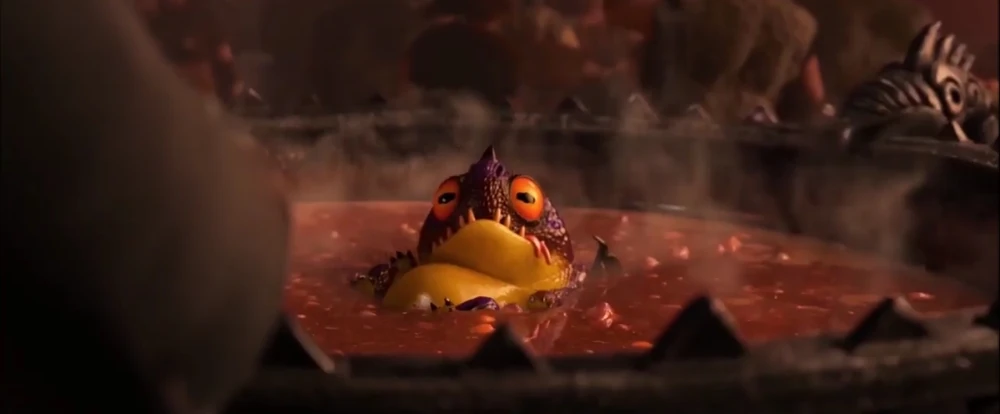
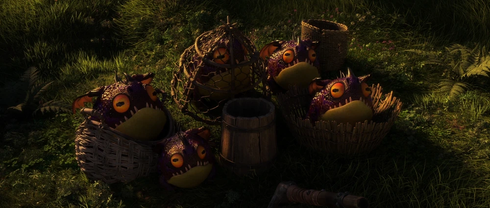
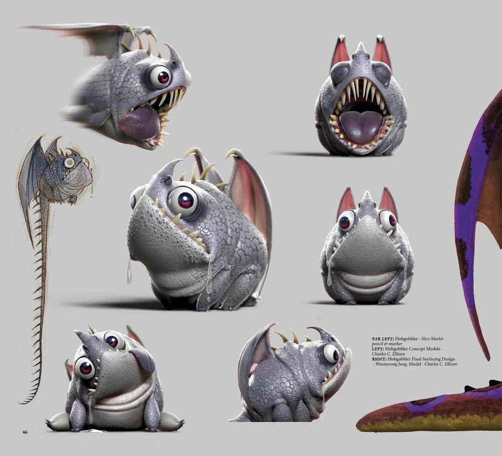
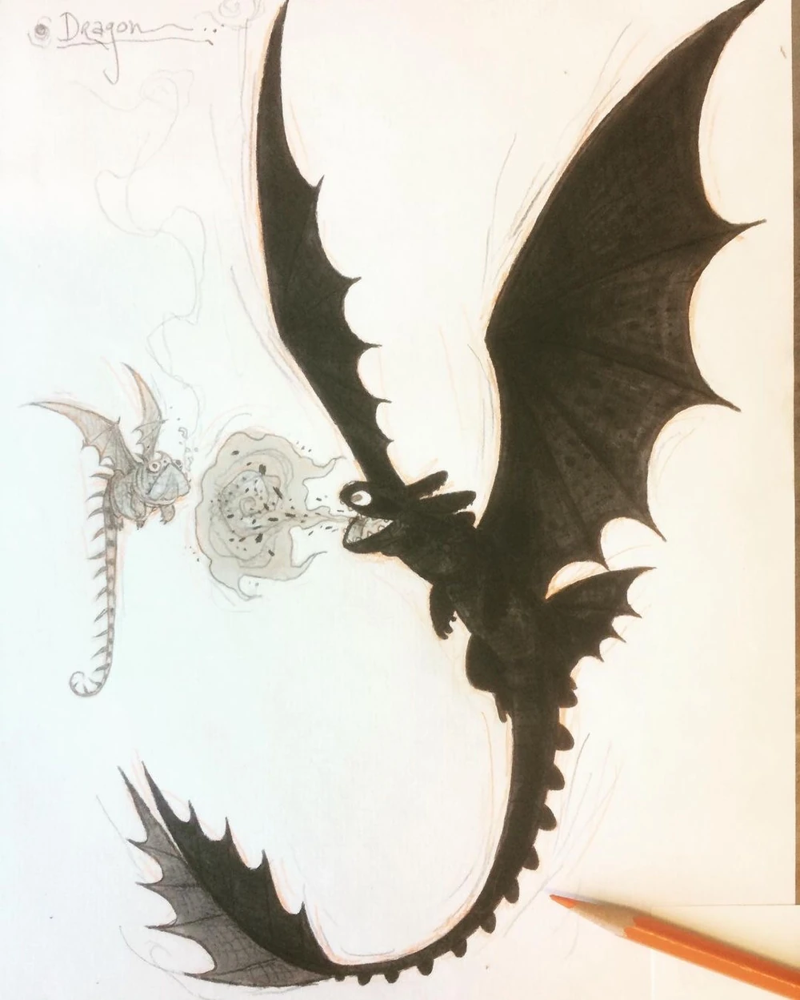
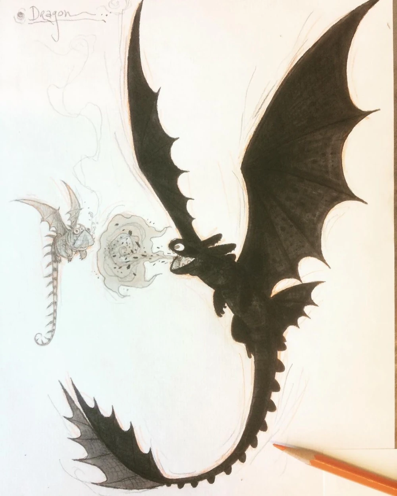

Home
Home
 About
About
 Dragons
Dragons
 Feedback
Feedback
 Sources
Sources

First appearance:
How to train your dragon 3
All appearances:
How to train your dragon 3
Behaviour and personality:
They tend to devour almost anything they see. The also coat themselves in their own slobber so they are able to slip out of tight spots. They appear to be quite lazy too, as they are rarely seen doing anything other than sitting still and eating.
However, this does not mean they should be underestimated. If provoked, they can become exceedingly ferocious against enemies and engage them in a frenzied attack where they will devour everything in their path until the threat is neutralized.
Still, they can be quite mischievous, they often play tricks and scare unsuspecting humans. A primary example is the torment of Gobber in the third movie. And yet, they become quite attached to those that help them immediately.
Features:
Small thin spines on the back
Small curved nasal horn
Abilities:
Feeding frenzy
Multiplying
Covering themselves with their own slobber to slip through tight spots
Diet:
Hobgobbler bait
Slugs
Flower
Habitat:
Unknown / Never mentioned
Size:
91,44 cm (3 ft)
Wingspan:
76,2 cm (2,5 ft) [unrealistic/DreamWorks official measurement]
1,252 m (4,917 ft) [realistic/based on model sheet]
Weight:
24,976 kg (55 lbs)
Fire Type:
Incendiary slobber
Weaknesses:
Overeating
Small size
Flight (group) dependency
Trivia:
Based on a bullfrog, French bulldog, and a beach ball.
Feeding frenzy based on piranha.
According to the Urban Dictionary, the Hob Gobbler is a creature from Appalachia folklore that grants wishes, as well as plays tricks on humans.
Name may be derived from a type of fairy or goblin from the folklore of the British Isles called a Hobgoblin.
Fishlegs' Dragon Stats:
Attack: 8
Speed: 8
Armor: 4
Firepower: 6
Shot Limit: 28
Venom: 0
Jaw strength: 12
Stealth: 18
Gallery:
   
